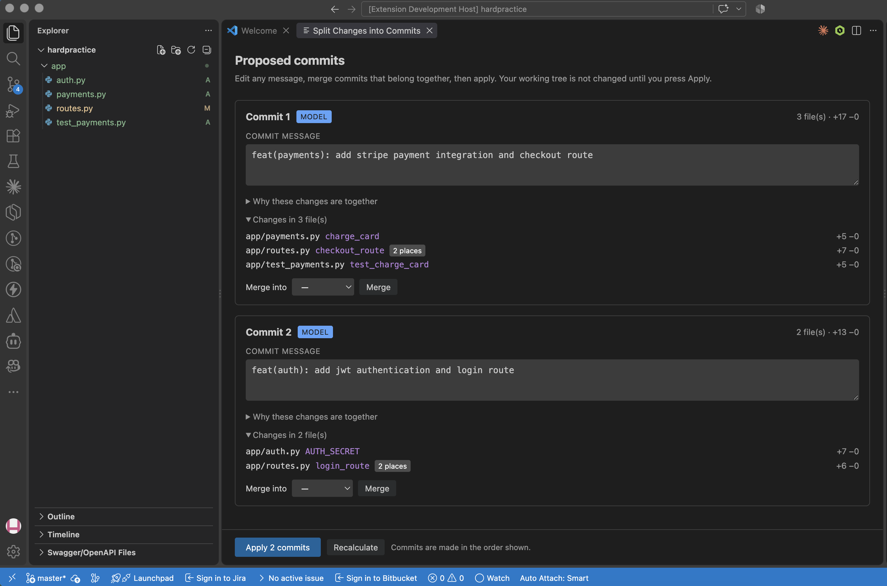

A VS Code extension, CLI and GitHub Action that takes a tangled working tree and splits it into separate commits, one per feature, each with a Conventional Commits message.
Git groups changes by proximity. Two unrelated functions written a few lines apart land in the same hunk, so the smallest unit you can stage is already too big. You end up with commits nobody can revert, bisect or review.
The most important signal is a negative one. Two hunks in the same file but different functions score almost nothing, because file proximity is what makes naive tools glue unrelated work together.

login_route and checkout_route sit next to each other in routes.py and still end up in different commits. Nothing changes until you press Apply.Real repositories already contain ground truth, since developers split their own work into commits. The benchmark squashes N consecutive commits into one messy tree and checks whether the tool puts them back, scoring pairs of hunks so arbitrary commit labels don't matter.
| Algorithm | F1 | Precision | Recall | ARI |
|---|---|---|---|---|
| Louvain (default) | 0.411 | 0.728 | 0.336 | 0.198 |
| Label propagation | 0.413 | 0.717 | 0.349 | 0.183 |
It over-splits, proposing about 7 commits where the developer made 3. Precision of 0.73 means the groupings it makes are usually right. The missed recall is changes a human bundled with no structural link, like a feature and its CHANGELOG entry. For a tool that suggests commits, an extra commit is a nuisance, while a commit bundling unrelated work is the exact problem it exists to fix.
core.py takes a diff and returns proposed commits without knowing about git, HTTP or editors. The CLI, the extension, the FastAPI service and the PR check all share it, so migrating Flask to FastAPI touched one directory.- side line numbers stay valid. Only the + side is recomputed, and a dedicated test guards against a skipped middle hunk landing in the wrong place.
new_start = old_start + offset offset += (new_count - old_count) # only for included hunks
Mixed add/remove hunks are never split. Symbol detection is regex-based rather than a real parse. Binary files and renames travel whole. Nothing verifies that each commit builds on its own; dependency ordering is a proxy, not a proof.